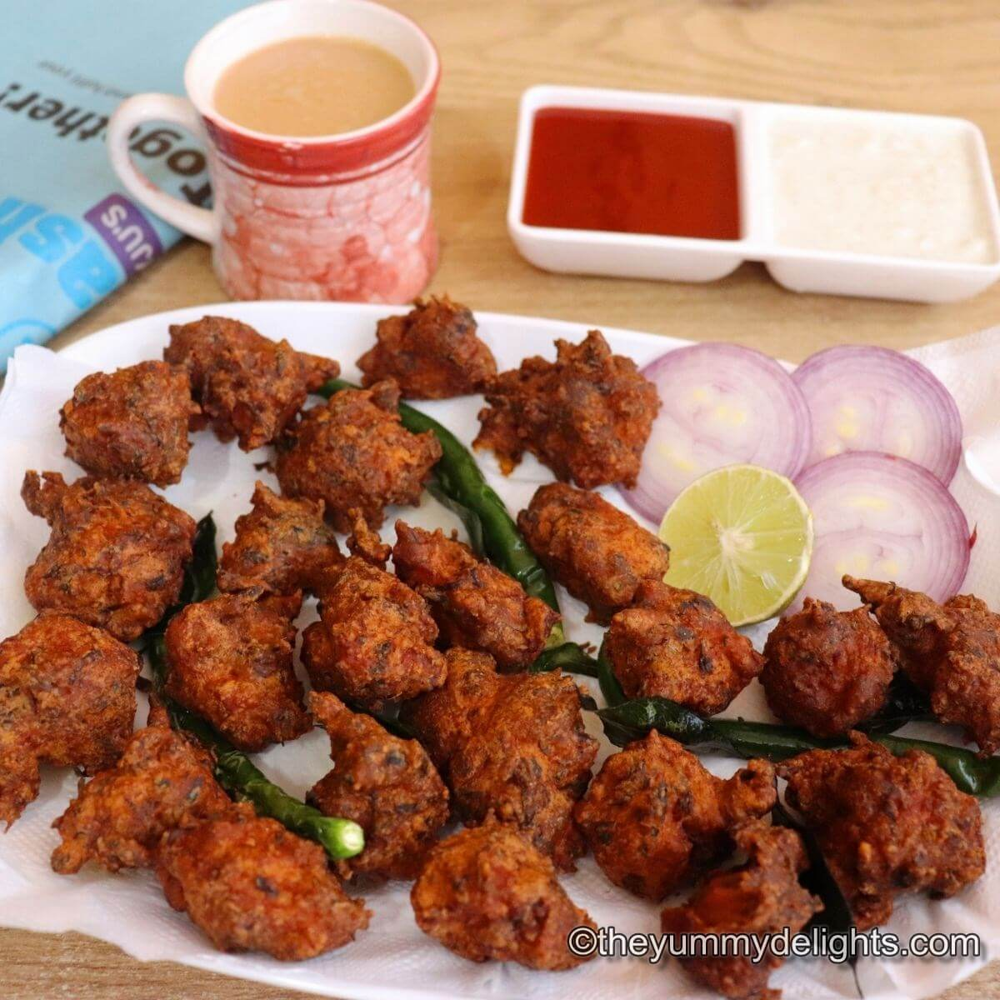

Chicken Pakoras Recipe

Enjoy this rich, flavourful beef curry with chapatis or jeera rice. It's a great family dish and ideal for a special occasion, such as Eid
Ingredients
- 700g boneless chicken, cut into bite-sized pieces
- 2 tbsp cornflour
- 50g rice flour
- 40g gram flour, sieved
- 3 dried chillies, crushed or 3 green chillies, finely chopped
- ½ tsp chilli powder
- ½ tsp curry powder
- ½ tsp ground coriander
- ½ tsp cumin
- 2 small onions, chopped
- small bunch of coriander, finely chopped
- vegetable oil, for deep-frying
- sweet chilli sauce or green chutney, to serve
Steps
- Put the chicken in a large bowl, then use your hands to coat the pieces in the cornflour. Mix in the rice flour, followed by the gram flour. Add the chillies, spices, onion, coriander and 1 tsp salt. Mix well with your hands.
- Gradually add around 150ml water until the ingredients have become moist and ever-so-slightly wet. You may not need all the water (adding too much will stop the pakora mixture binding).
- Fill a deep pan no more than a third full with vegetable oil and heat to 180C. Squeeze a small amount of the pakora mixture together before carefully lowering into the hot oil with a spoon. Fry for 8-10 mins, turning regularly, until cooked through and browned all over. Set aside on a plate lined with kitchen paper while you repeat with the remaining mixture, frying in small batches. Serve hot with a sweet chilli sauce or green chutney.
- Serve and Enjoy!